2026-11-26。这里使用已冻结 10,000 步种子 17 的历史开发输出。第一批新训练在原训练人内另行留人。X 为观测，S/O 为 v3 条件目标。两支均可从整数回放。
F3 窗内约 14.4 秒的负向尖谷在整数解码中明显变浅，同窗 HbO 的缓慢起伏较接近观测，但 S、O 各自存在偏差。EEG-S 7472 的总体频谱与幅度、位置匹配的对照重叠。Hb-O 49 的三个实例包含上升和下降趋势。图示证据支持继续检查波形与属性特异性；生理类别命名仍待更强的跨人证据。
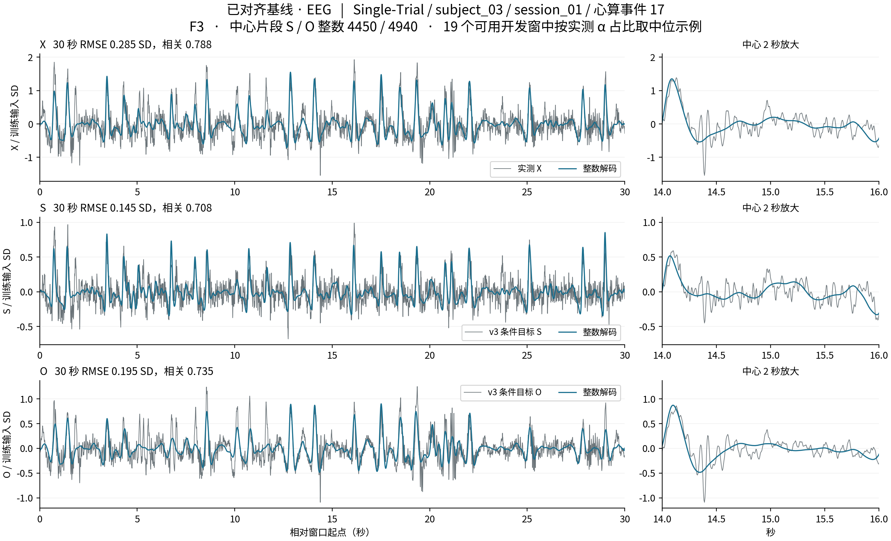
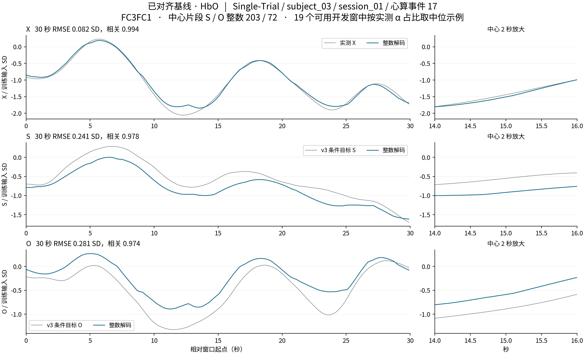
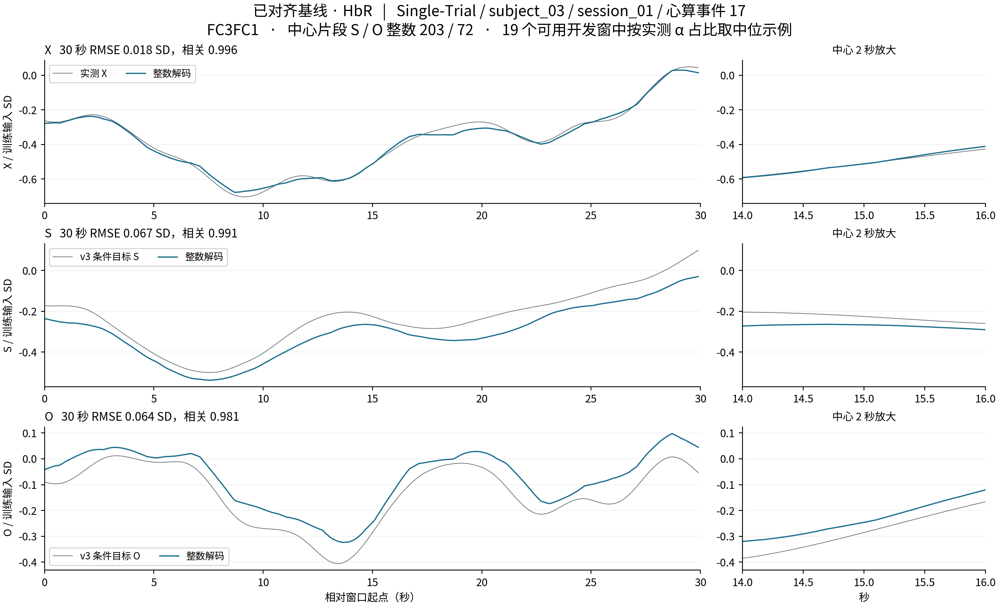
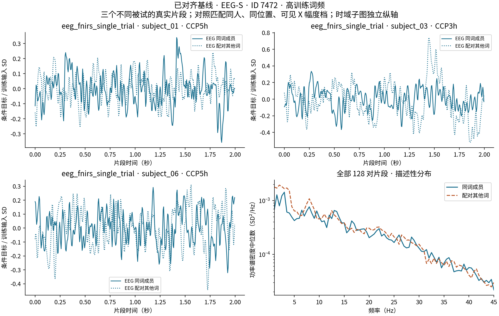
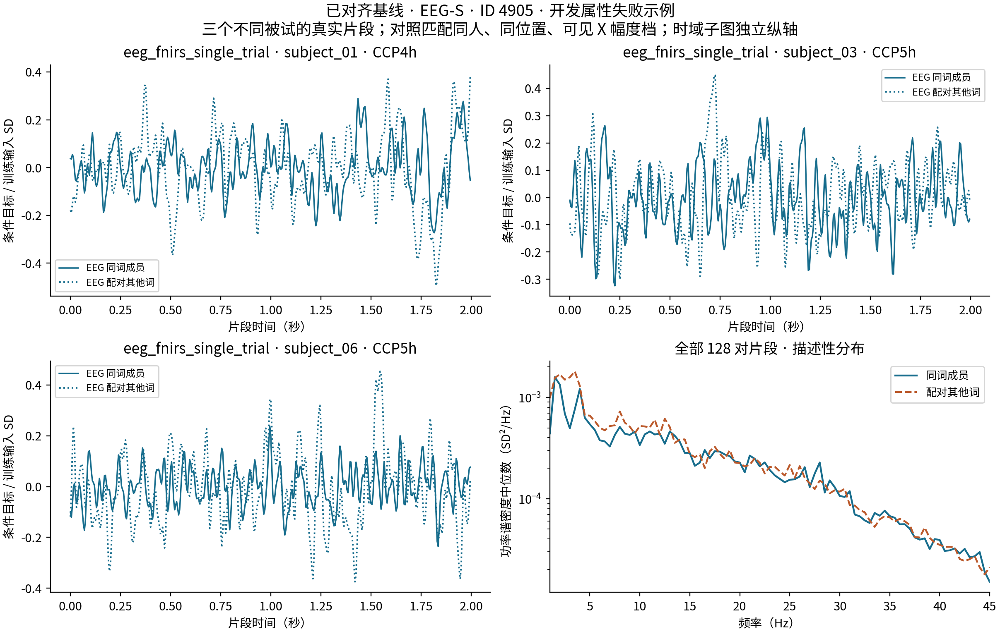
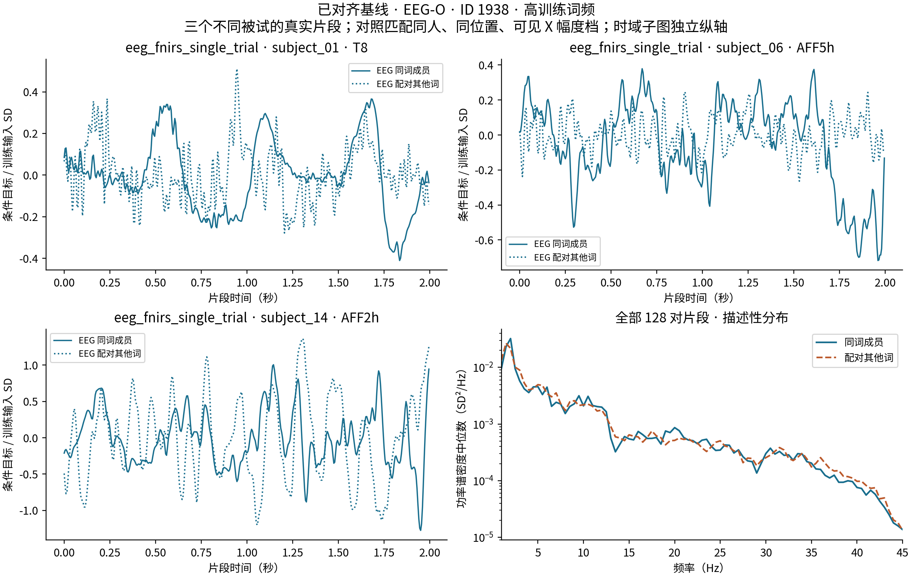
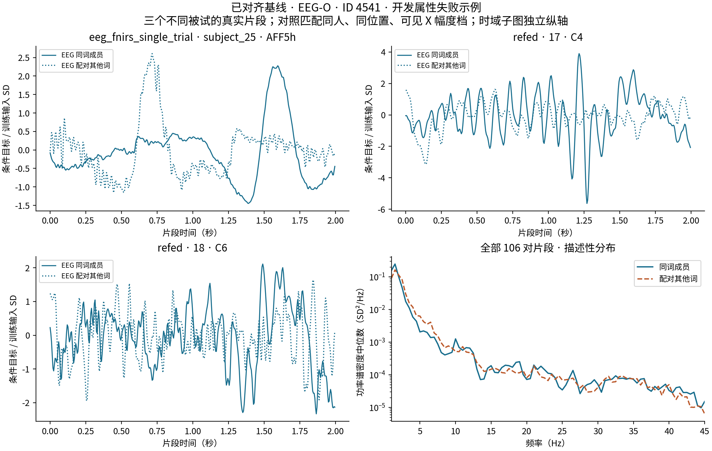
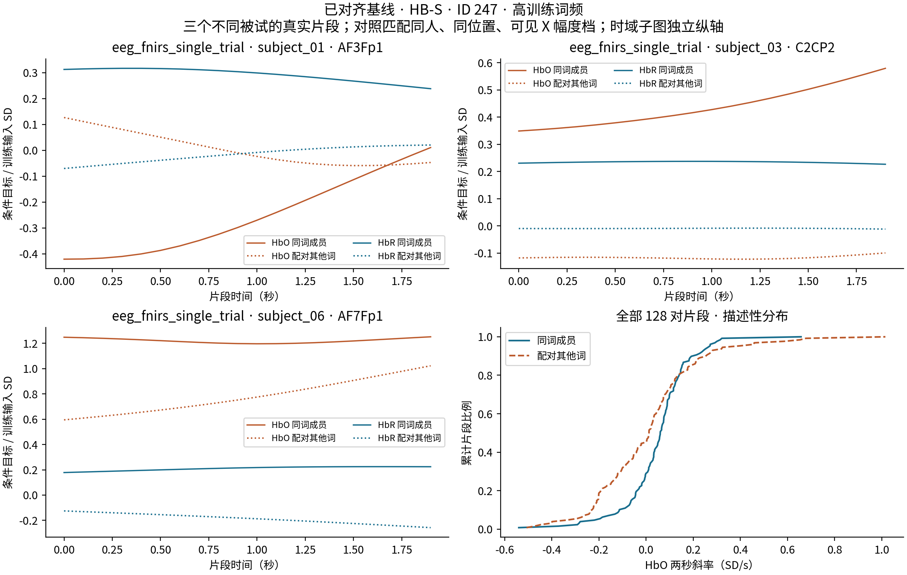
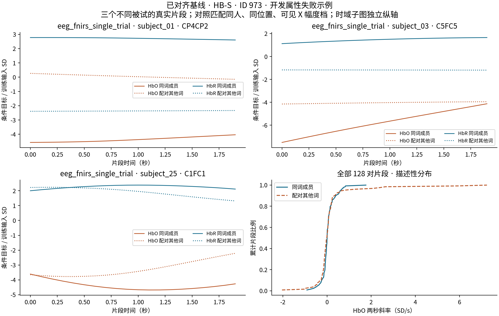
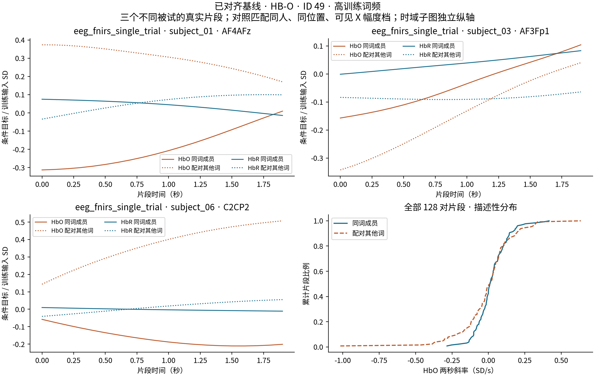
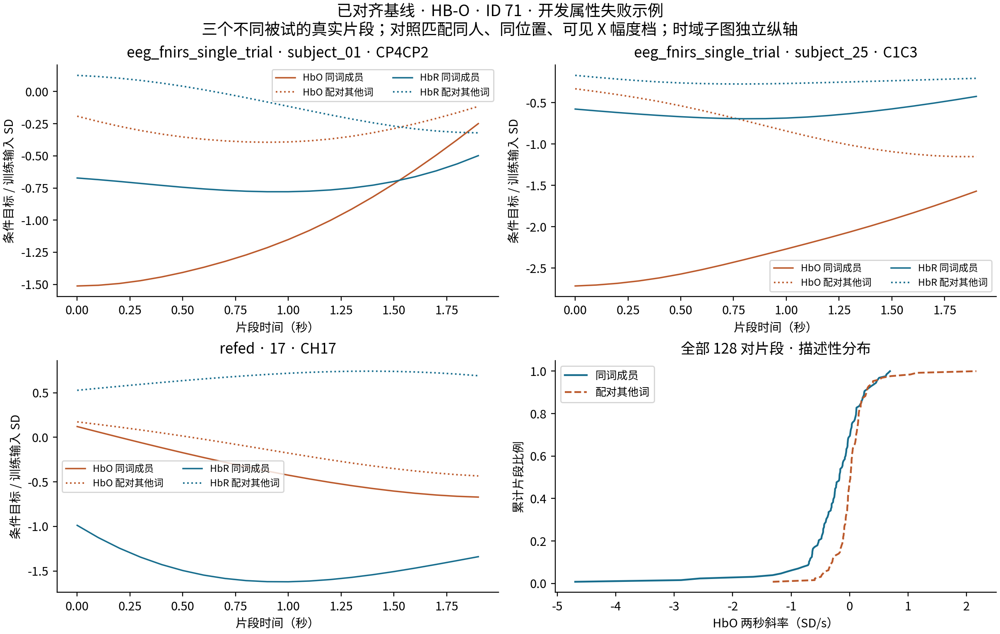
高词频取训练合格词的第 90 百分位；失败词沿用历史审计的开发反例。成员分布统计可能包含同一被试的多个片段。EEG 属性为 8–13 Hz（上界不含）占 1–45 Hz（上界不含）的功率；Hb 为 HbO 两秒直线斜率。波形数字 · 成员与匹配对照数字 · 示例来源